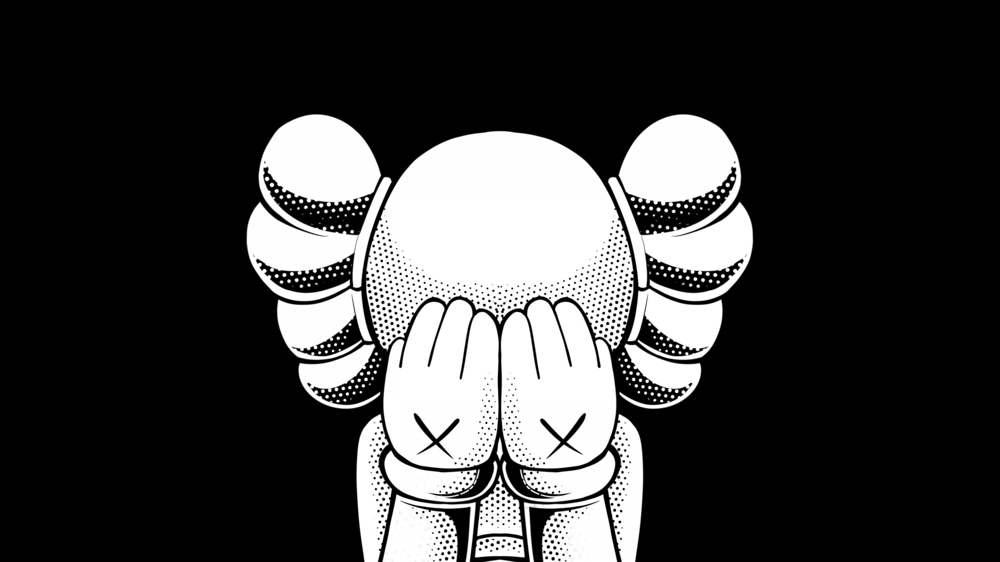
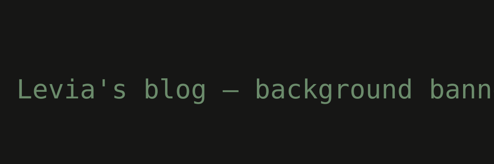

IMAGE
Hello World!
This is my new blog!
这是博客启动后的第一篇记录，包含站点主题、写作方向和后续内容计划。摘要区域优先读取 description，没有 description 时使用正文 Summary。
40 posts
归档页用于快速回看站点全部文章。左侧保留年份与月份的定位能力，右侧卡片展示封面、摘要和标签，让时间索引和内容判断同时成立。
这是博客启动后的第一篇记录，包含站点主题、写作方向和后续内容计划。摘要区域优先读取 description，没有 description 时使用正文 Summary。

VIDEO测试文章封面视频、正文视频短代码和不同媒体状态下的展示效果。视频类文章在归档里用封面图或首帧海报承接视觉位置。
从 Hugo 到双线部署的完整实践。一份代码，两边构建。没有封面时使用标题首字生成占位图，保持卡片比例稳定。

IMAGE记录搜索页、标签页的信息分层和视觉节奏。归档页沿用同一套极简语言，但将扫描重点切换到时间和文章预览。
站点作者、写作主题和长期维护方向。短内容卡片仍保留摘要区域，避免归档列表出现忽长忽短的跳动。
归档中跨月份内容按真实发布时间进入对应分组。点击左侧月份时，页面会跳到这一条月份分隔线。
旧内容迁移后仍然通过月份索引进入归档。时间线不只展示年份，也承担月份级别的跳转导航。
后台相关文章在归档中同样展示标签和摘要。封面缺失时保持固定视觉面积，不造成布局跳动。
时间线的年份节点会一直留在左侧，月份链接负责精确定位。移动端则转为横向可滑动月份导航。